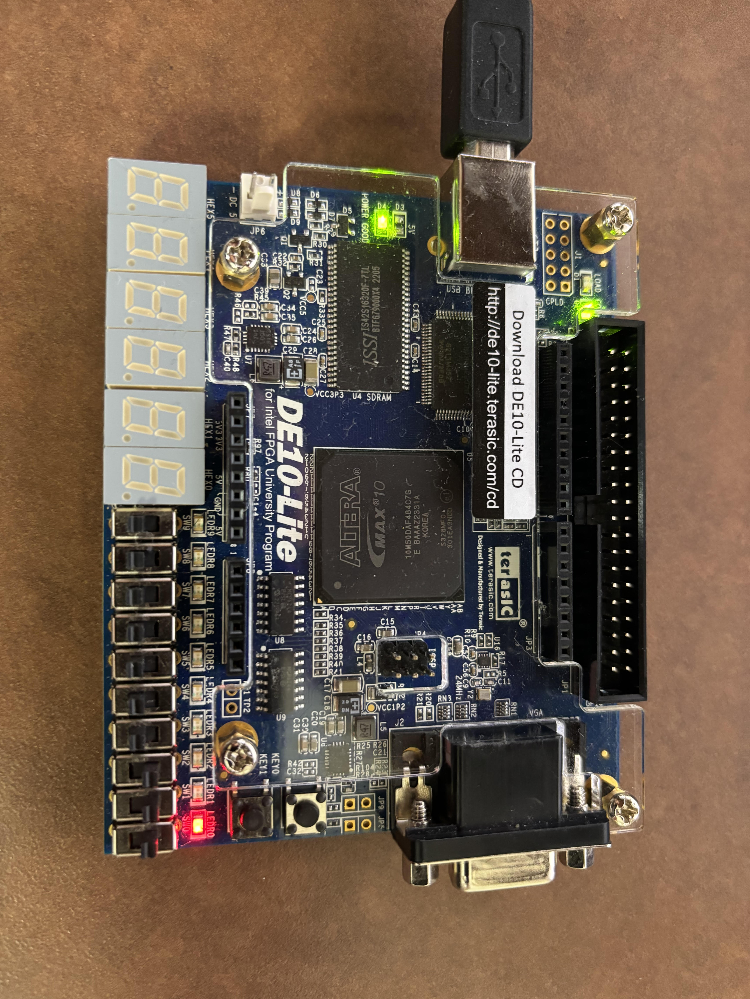
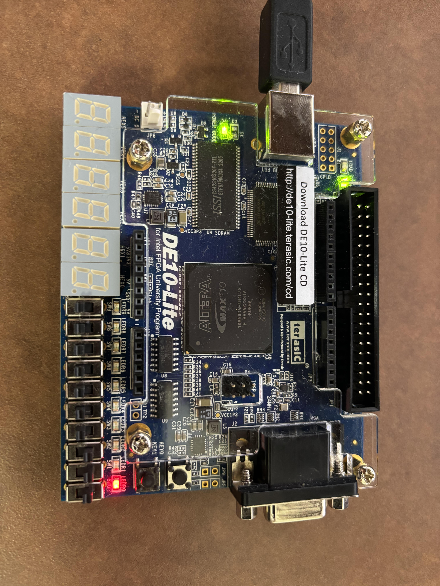

FPGA System Design
This project involved a 3 stage process which included testing the Altera DE-10 LITE board, designing a mixed signal system and eventually developing the hardware for a system on chip. All aspects of the project were completed using Intel's Quartus Prime. The first part of the project involved basic setup and programming of the DE-10 LITE board, the board was set up using the DE-10 LITE system builder. Once the pin assignments were established, I developed two VHDL programming files to test the FPGA : a Binary Coded Decimal counter and a simple 4 bit Adder. I programmed these files in VHDL, instantiated them in a Verilog top-level file, and uploaded them to the DE-10 LITE board using the Quartus Prime programmer. The BCD program worked by displaying the binary value set by the switches on the hex display. The maximum binary value that can be displayed is 2^9.

The next phase of the project involved designing a mixed-signal system and programming it onto the FPGA. This process included developing a pulse width modulation (PWM) system using a combination of a debouncer, a generator, and a phase-locked loop (PLL) component. The debouncer was implemented to clean up any noise or unintended multiple signals from mechanical switches, ensuring that only a single, clean pulse is generated when a switch is toggled. The generator was designed to produce the PWM signal, with its duty cycle being directly controlled by the state of the switches SW0-SW2 on the DE10-Lite board. The combination of these three switches determines the duty cycle, with each switch contributing to the percentage of time the signal remains high during one PWM cycle. The PLL (Phase-Locked Loop) was used to stabilize and synchronize the clock signals, ensuring that all components in the system operated cohesively. Shown below is the completed PWM design programmed on the FPGA. In the image on the left the LEDR0 component is red when SW0-SW2 are all disabled. In the image on the right the LEDR0 compnent shines a brighter red due to all three switches being turned on.
 

Once the PWM system was complete, I then developed an Analog to Digital Conversion (ADC) system using Quartus Platform Designer. In this stage, I integrated the ADC core, ALTPLL, JTAG to Avalon Bridge, and Avalon-MM pipeline bridge components. After configuring and assembling these components, an HDL file was generated to represent the system, accompanied by a block diagram for use in the schematic design. With the system now fully designed, the next step was to import the block diagram into the PWM schematic. The ADC components were then routed as shown in the schematic below, allowing for interfacing with the hex displays on the DE10-Lite board. The PWM signal, modulated by the input from SW0-SW2, is converted by the ADC and the corresponding output voltage is displayed on the HEX displays. Finally, the completed design was programmed and tested on the DE10-Lite Board. The system operates by reading the input voltage via a white jumper wire. The output voltage varies depending on the configuration of switches SW0-SW2, and the resulting voltage is clearly displayed on the HEX indicators. Shown below is a picture of the working result.


The final part of the project focused on designing the hardware for a System on Chip (SoC). This process involved the integration of multiple essential components into a cohesive system, each playing a critical role in the overall functionality of the SoC.
Once all these components were configured and connected within the Quartus Platform Designer, a separate HDL (Hardware Description Language) file was generated. This HDL file represented the entire SoC hardware configuration, ready to be synthesized, implemented, and programmed onto the FPGA. The HDL file not only defined the structure and interconnections of the components but also provided the necessary details for timing, resource allocation, and peripheral integration.
This integrated SoC design provided a robust platform capable of executing a wide range of tasks, with all components working in harmony to achieve the desired functionality.